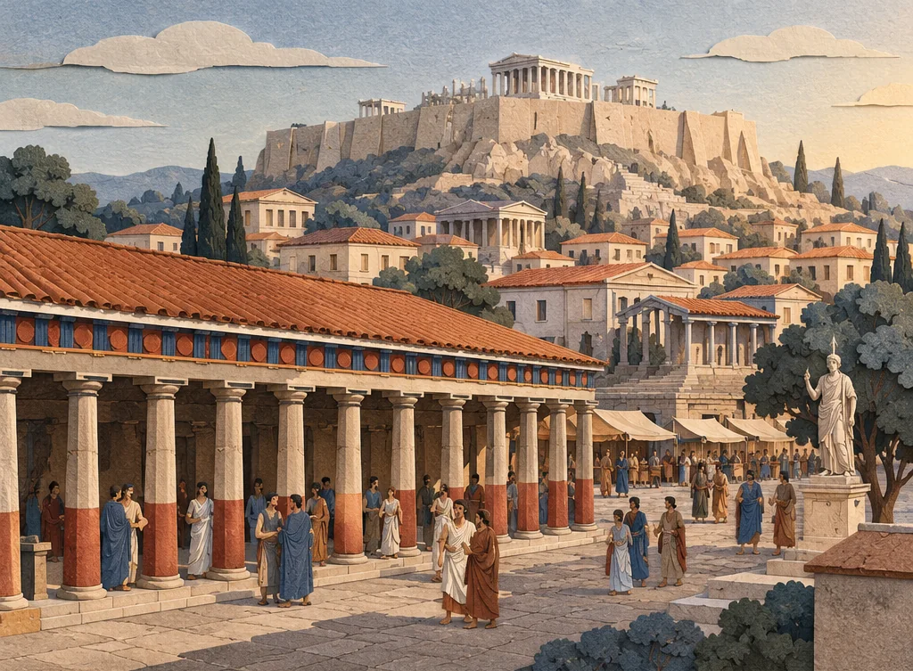

Zénon de Citium est un marchand phénicien qui fait naufrage près du Pirée, au large d’Athènes, vers 300 avant notre ère. Sa cargaison entière de pourpre coule avec le bateau. En attendant de refaire sa vie, il entre par hasard dans une librairie d’Athènes et tombe sur un livre consacré à Socrate. Il demande au libraire où l’on peut rencontrer des hommes comme celui-là. Un passant qui traverse la rue au même moment, un philosophe nommé Cratès : le libraire le lui montre. Zénon le suit. Il ne quittera plus jamais la philosophie.
Il fonde son école quelques années plus tard, sous un portique peint d’Athènes, la Stoa Poikile, qui donnera son nom au mouvement : le stoïcisme.
L’anecdote est rapportée par Diogène Laërce, plusieurs siècles après les faits, et a sans doute été enjolivée avec le temps. Mais le mot qu’on prête à Zénon, repensant au naufrage qui a tout changé pour lui, résume déjà l’esprit de l’école qu’il allait fonder : « Je viens de faire un bon voyage, puisque j’ai fait naufrage. »
Vivre selon la raison, pas selon l’humeur
Le stoïcisme part d’une idée simple : l’univers est traversé par un ordre rationnel, une raison, le logos, et la sagesse consiste à vivre en accord avec lui plutôt qu’à lutter contre. Ce qui dépend de nous, c’est notre jugement sur les choses, nos désirs, nos actions. Ce qui n’en dépend pas, c’est à peu près tout le reste : la santé, la réputation, la météo, les décisions des autres.
Le seul vrai bien, pour un stoïcien, c’est la vertu : agir avec justice, courage, tempérance et discernement, quelles que soient les circonstances. Pas la richesse, pas le confort, pas même la bonne réputation : ce sont des choses « indifférentes », ni bonnes ni mauvaises en soi, qu’on peut préférer sans en dépendre.
« N’explique pas ta philosophie. Incarne-la. »
Épictète
Ce n’est pas un hasard si cette phrase vient d’Épictète, un esclave affranchi devenu professeur de philosophie : chez les stoïciens, une idée ne vaut que par ce qu’elle change dans une vie réellement vécue, jamais par sa seule cohérence sur le papier.

Ce qui dépend de nous, ce qui n’en dépend pas
Cette distinction, les stoïciens l’appellent la dichotomie du contrôle. Elle structure toute la pratique stoïcienne : trier, à chaque instant, ce qu’on peut réellement changer de ce qu’on ne peut que subir, et n’investir son énergie que dans la première catégorie. Elle est déjà développée en détail, geste par geste, sur la page consacrée à Marc Aurèle, qui en a fait l’exercice central de sa vie d’empereur.
De Zénon aux empereurs : une philosophie qui traverse les siècles
Après Zénon, l’école passe à Cléanthe puis à Chrysippe, qui la systématise au point qu’on dira de lui : « sans Chrysippe, pas de Portique. » Mais c’est trois siècles plus tard, à Rome, que le stoïcisme trouve le visage qu’on lui connaît le mieux aujourd’hui, incarné par trois hommes aux conditions opposées : un esclave affranchi, Épictète, un conseiller impérial immensément riche, Sénèque, et un empereur, Marc Aurèle. La même discipline s’applique aux trois, quel que soit leur rang : ce qui dépend de nous ne change pas selon qu’on possède tout ou rien.

Ce que le stoïcisme n’est pas
Dans le langage courant, être « stoïque » veut dire encaisser sans broncher, ne rien ressentir. Ce n’est pas ce que les stoïciens appelaient l’apatheia : non pas l’absence d’émotion, mais l’absence des passions destructrices qui naissent d’un jugement faux sur ce qui compte vraiment. Un stoïcien peut aimer, s’inquiéter pour un proche, ressentir de la joie : ce qu’il travaille à éviter, c’est de se laisser submerger par une émotion fondée sur une erreur de jugement, comme croire qu’un évènement extérieur peut, à lui seul, détruire sa vie.
Cette nuance le distingue aussi de l’autre grande école née au même siècle à Athènes : l’épicurisme, qui vise lui aussi une forme de tranquillité, l’ataraxie, mais par une voie presque opposée, le retrait plutôt que l’engagement dans le monde. Le détail de cette opposition fait l’objet d’une page à part, stoïcisme contre épicurisme.
L’appliquer au quotidien
Trois exercices stoïciens, documentés depuis l’Antiquité, tiennent encore aujourd’hui sans aucun aménagement.
Le matin, anticiper calmement ce qui peut mal tourner dans la journée, non pour s’angoisser à l’avance, mais pour ne pas être pris au dépourvu le moment venu. Le soir, repasser la journée écoulée sans complaisance ni culpabilité excessive : qu’ai-je bien fait, qu’ai-je raté, qu’aurais-je pu faire autrement. Et, à chaque contrariété, se poser une seule question avant de réagir : est-ce que ceci dépend vraiment de moi ?
En bref
📌 Le stoïcisme est une école philosophique fondée à Athènes vers 300 av. J.-C. par Zénon de Citium, qui enseignait sous un portique peint (la Stoa), d’où le nom de l’école.
📌 Sa doctrine centrale tient dans la dichotomie du contrôle : distinguer ce qui dépend de nous (jugements, désirs, actions) de ce qui n’en dépend pas, et ne placer sa tranquillité que dans la première catégorie.
📌 Être stoïque ne veut pas dire ne rien ressentir : l’apatheia stoïcienne vise à se libérer des passions nées d’un jugement faux, pas à supprimer les émotions elles-mêmes.